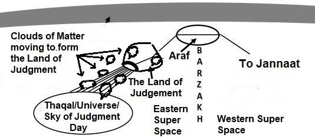
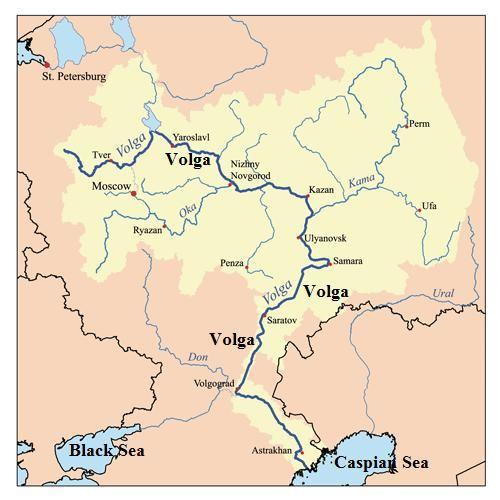
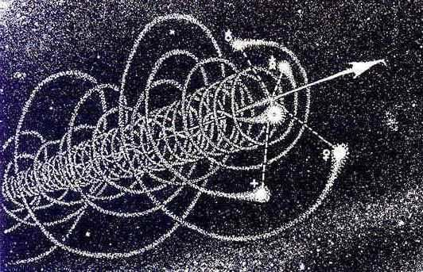

The Companions of the Jannaat will be well that Day in their abode and have the fairest of places for repose. The Day will split open the Sky with clouds, and angels shall be sent down, descending. That Day the dominion as of right and truth shall be for Most Merciful. It will be a Day of dire difficulty for the Misbelievers.
জান্নাতের সাহাবীরা সেদিন তাদের আবাসে ভালো থাকবেন এবং তাদের বিশ্রামের জন্য সবচেয়ে সুন্দর জায়গা থাকবে। দিনটি মেঘের সাথে আকাশকে বিদীর্ণ করবে এবং ফেরেশতারা অবতরণ করবে। সেদিন হক ও সত্যের আধিপত্য হবে পরম করুণাময়ের জন্য। এটা হবে কাফেরদের জন্য এক কঠিন কষ্টের দিন।
In the above verses, 'Sky' refers to the 'reviving initial universe.' Initially, the reviving universe will be in the form of Thaqal (Heavy Mass). The Thaqal will split and eject the matter of the Solar System, which will move through the Super Space like clouds, as described in the verses above: "The Day will split open the Sky with clouds…" The clouds of solar matter will carry resurrecting living creatures. Both the matter and the living creatures will form the Land of Judgment in the Super Space at the Junction Point of As-Sirat, the channel connecting the Araf.
উপরের আয়াতগুলিতে 'আকাশ' বলতে 'পুনরুজ্জীবিত প্রাথমিক মহাবিশ্ব'কে বোঝায়। প্রাথমিকভাবে, পুনরুজ্জীবিত মহাবিশ্ব থাকাল (ভারী ভর) আকারে হবে। থাকাল সৌরজগতের বিষয়টিকে বিভক্ত করবে এবং বের করে দেবে, যা মেঘের মতো সুপার স্পেসের মধ্য দিয়ে চলে যাবে, যেমনটি উপরের আয়াতগুলিতে বর্ণিত হয়েছে: "দিনটি মেঘের সাথে আকাশকে বিভক্ত করবে..." সৌর পদার্থের মেঘ পুনরুত্থিত প্রাণীদের বহন করবে। আরাফের সাথে সংযোগকারী চ্যানেল আস-সিরাতের জংশন পয়েন্টে সুপার স্পেসে বিষয় এবং জীবিত প্রাণী উভয়ই বিচারের ভূমি গঠন করবে।
FIGURE 25.2: Clouds of Solar Matter forming the Land of Judgment

চিত্র 25_2 / Figure 25_2
চিত্র 25.2: সৌর পদার্থের মেঘ বিচার ভূমি গঠন করে
চিত্র 25_2 / Figure 25_2
The angels will descend onto the Land of Judgment from the Araf and other places, as the verses say: "The Day will split open the Sky with clouds, and angels shall be sent down, descending." The event is deliberately discussed in Section-7 of Chapter-30.
ফেরেশতারা আরাফ এবং অন্যান্য স্থান থেকে বিচারের ভূমিতে অবতরণ করবে, যেমন আয়াতে বলা হয়েছে: "দিন আকাশকে মেঘ দিয়ে বিদীর্ণ করবে, এবং ফেরেশতারা অবতরণ করবে, অবতরণ করবে।" ঘটনাটি পরিকল্পিতভাবে অধ্যায়-30-এর ধারা-7-এ আলোচনা করা হয়েছে।
The Day that the wrongdoer will bite at his hands; he will say: "Oh! Would that I had taken a path with the Apostle! Ah! Woe is I! Would that I had never taken such a one for a friend! He did lead me astray from the Message, after it had come to me! Ah! The satan is but a traitor to man!" Then the Apostle will say: "O my Lord! Truly, my people took this Qur'an for just foolish nonsense." Thus, have We made for every prophet an enemy among the sinners; but enough is thy Lord to guide and to help. Those who reject Faith say: "Why is not the Qur'an revealed to him all at once?" Thus, that We may strengthen thy heart thereby, and We have rehearsed it to thee in slow well-arranged stages, gradually. And no question do they bring to thee but We reveal to thee the truth and the best explanation. Those who will be gathered to Hell on their faces, they will be in an evil plight and as to Path most astray.
যেদিন জালেম তার হাতে কামড় দেবে; সে বলবে: "হায়! আমি যদি রসূলের সাথে পথ অবলম্বন করতাম! হায়! হায়! হায়! আমি যদি এমন কাউকে বন্ধু হিসাবে গ্রহণ না করতাম! আমার কাছে বাণী আসার পর সে আমাকে বিপথগামী করেছিল! আহা! শয়তান তো মানুষের বিশ্বাসঘাতক মাত্র!" তখন রসূল বলবেন: "হে আমার রব! সত্যই আমার সম্প্রদায় এই কুরআনকে নিছক মূর্খতার জন্য গ্রহণ করেছে।" এমনিভাবে আমি প্রত্যেক নবীর জন্য পাপীদের মধ্যে শত্রু করে দিয়েছি। কিন্তু তোমার পালনকর্তাই পথপ্রদর্শন ও সাহায্য করার জন্য যথেষ্ট। যারা বিশ্বাস প্রত্যাখ্যান করে তারা বলে: "কেন তার কাছে একবারে কোরআন অবতীর্ণ হয় না?" এইভাবে, যাতে আমরা এর দ্বারা আপনার হৃদয়কে শক্তিশালী করতে পারি এবং ধীরে ধীরে সুবিন্যস্ত পর্যায়গুলিতে আমরা আপনার কাছে তা পাঠ করেছি। এবং তারা আপনার কাছে কোন প্রশ্নই আনে না, তবে আমি আপনার কাছে সত্য ও সর্বোত্তম ব্যাখ্যা প্রকাশ করি। যাদের মুখের উপর জাহান্নামে সমবেত করা হবে, তারা হবে মন্দ অবস্থার মধ্যে এবং সবচেয়ে বিপথগামী।
After the Judgment, the Land of Judgment and the sinners will be cast back into the reviving universe (Thaqal). Each sinner will be drawn into a pre-determined galaxy, shooting through space like a flying super-man. In this way, the sinners will be moved into hell on their faces, as the verse in the previous paragraph describes: ―Those who will be gathered to Hell on their faces, they will be in an evil plight and as to Path most astray.‖ Each sinner will reach the galaxy destined on the Day of Judgment. The driving angel will be attached to him from the Time of Resurrection:
বিচারের পরে, বিচারের ভূমি এবং পাপীদের পুনরুজ্জীবিত মহাবিশ্বে (থাকাল) ফিরিয়ে দেওয়া হবে। প্রতিটি পাপীকে একটি পূর্ব-নির্ধারিত গ্যালাক্সিতে টানা হবে, একটি উড়ন্ত সুপার-ম্যানের মতো মহাকাশে গুলি চালাবে। এইভাবে, পাপীদের তাদের মুখের উপর জাহান্নামে স্থানান্তরিত করা হবে, যেমনটি পূর্ববর্তী অনুচ্ছেদের আয়াতটি বর্ণনা করে: "যাদের মুখের উপর জাহান্নামে একত্রিত করা হবে, তারা হবে একটি খারাপ অবস্থা এবং সবচেয়ে বিপথগামী পথের দিকে।" প্রতিটি পাপী কিয়ামতের দিন নির্ধারিত গ্যালাক্সিতে পৌঁছে যাবে। কিয়ামতের সময় থেকে চালক ফেরেশতা তার সাথে সংযুক্ত থাকবে:
―And there will come forth every soul; with each will be an (angel) to drive and an (angel) to bear witness‖ [Al Quran 50:21] FIGURE 25.2: Moving on the Face
চিত্র 25_2 / Figure 25_2
-এবং প্রত্যেক আত্মা আবির্ভূত হবে; প্রত্যেকের সাথে থাকবে একজন (ফেরেশতা) চালনা করার জন্য এবং একজন (ফেরেশতা) সাক্ষ্য দেওয়ার জন্য” [আল কুরআন 50:21] চিত্র 25.2: মুখের উপর চলা
চিত্র 25_2 / Figure 25_2
Eventually, a sinner will find himself in an object of his galaxy. He is the eternal vicegerent of God over that galaxy. But Allah will forget him, and He will not listen to his call. He will be in punishment due to the inherent nature of his galaxy.
অবশেষে, একজন পাপী তার ছায়াপথের একটি বস্তুতে নিজেকে খুঁজে পাবে। তিনি সেই গ্যালাক্সির উপর ঈশ্বরের শাশ্বত ভাইসার্জেন্ট। কিন্তু আল্লাহ তাকে ভুলে যাবেন, তার ডাক শুনবেন না। তার গ্যালাক্সির সহজাত প্রকৃতির কারণে তিনি শাস্তির মধ্যে থাকবেন।
We sent Moses the Book and appointed his brother Aaron with him as minister, and We command: ―Go ye both to the people‖; who have rejected our signs, and those We destroyed with utter destruction. And the people of Noah, when they rejected the apostles, We drowned them, and We made them as a sign for mankind; and We have prepared for wrong-doers a grievous penalty. As also Ad, and Thamud, and the Companions of the Rass, and many a generation between them—to each one We set forth parables and examples, and each one We broke to utter annihilation. And the (Unbelievers) must indeed have passed by the town on which was rained a shower of evil. Did they not then see it? But they fear not the Resurrection.
আমরা মূসাকে কিতাব পাঠিয়েছিলাম এবং তার ভাই হারুনকে তার সাথে মন্ত্রী নিযুক্ত করেছিলাম এবং আমরা নির্দেশ দিয়েছিলাম: "তোমরা উভয়ে লোকদের কাছে যাও"; যারা আমাদের নিদর্শনাবলীকে প্রত্যাখ্যান করেছে এবং যাদেরকে আমি সম্পূর্ণরূপে ধ্বংস করে দিয়েছি। আর নূহের সম্প্রদায়, যখন তারা রসূলদেরকে প্রত্যাখ্যান করেছিল, তখন আমি তাদেরকে ডুবিয়ে দিয়েছিলাম এবং তাদেরকে মানুষের জন্য নিদর্শন করেছিলাম। আর আমি জালেমদের জন্য কঠিন শাস্তি প্রস্তুত করে রেখেছি। যেমন আদ, সামুদ, রাস-এর সাথী এবং তাদের মধ্যবর্তী বহু প্রজন্ম- প্রত্যেকের কাছে আমরা দৃষ্টান্ত ও উদাহরণ পেশ করেছি এবং প্রত্যেককে সম্পূর্ণরূপে ধ্বংস করে দিয়েছি। আর (অবিশ্বাসীরা) অবশ্যই সেই জনপদের পাশ দিয়ে অতিক্রম করেছে যার উপর বর্ষণ করা হয়েছিল। তখন কি তারা তা দেখেনি? কিন্তু তারা কেয়ামতকে ভয় করে না।
The People of Rass are not found in known historical records. However, Hazrat Ali (R.) shared a narration about them. According to his account, the People of Rass worshipped a pine tree, which they called Shah Darakht (the King Tree). They lived in 12 towns along the River Rass and ultimately killed their prophet by throwing him into a deep, dry well and sealing it with a large stone. The prophet endured a slow, cruel death; his distressed cries were heard, yet it failed to soften the people's hearts. This prophet is said to have lived after Solomon, placing him after 931 BCE. The People of Rass were then destroyed by fire, as the earth beneath them turned into blazing, glowing sulfur. A black cloud spread over them, descending as a dome of fire and causing their bodies to melt like lead. The following clues suggest that they may have been a people from what is now present-day Russia:
রাসের লোকেরা পরিচিত ঐতিহাসিক নথিতে পাওয়া যায় না। যাইহোক, হযরত আলী (রাঃ) তাদের সম্পর্কে একটি বর্ণনা শেয়ার করেছেন। তার বিবরণ অনুসারে, রাসের লোকেরা একটি পাইন গাছের পূজা করত, যাকে তারা শাহ দারাখত (রাজা গাছ) বলে। তারা রাস নদীর তীরে 12টি শহরে বাস করত এবং শেষ পর্যন্ত তাদের নবীকে একটি গভীর, শুকনো কূপে ফেলে এবং একটি বড় পাথর দিয়ে সিল করে হত্যা করে। ভাববাদী একটি ধীর, নিষ্ঠুর মৃত্যু সহ্য করেছিলেন; তার ব্যথিত আর্তনাদ শোনা গিয়েছিল, তবুও তা মানুষের হৃদয়কে নরম করতে ব্যর্থ হয়েছিল। এই ভাববাদী সলোমনের পরে বেঁচে ছিলেন বলে জানা যায়, তাকে 931 খ্রিস্টপূর্বাব্দের পরে স্থাপন করে। রাসের লোকেরা তখন আগুনে ধ্বংস হয়ে গিয়েছিল, কারণ তাদের নীচের পৃথিবী জ্বলন্ত, প্রদীপ্ত সালফারে পরিণত হয়েছিল। একটি কালো মেঘ তাদের উপর ছড়িয়ে পড়ে, আগুনের গম্বুজের মতো নেমে আসে এবং তাদের দেহ সীসার মতো গলে যায়। নিম্নলিখিত সূত্রগুলি থেকে বোঝা যায় যে তারা বর্তমান রাশিয়ার লোক হতে পারে:
1. According to the narration of Hazrat Ali (R.), the People of Rass had twelve cities along a river, one of which was destroyed, leaving eleven cities. Interestingly, eleven large cities in modern-day Russia are situated along the Volga River, suggesting that this may have been the river beside which they lived. The Volga, the largest river in Europe, is approximately 2,300 miles long. It originates in the Valday Hills, northwest of Moscow, and flows into the Caspian Sea. The name 'Volga' comes from a Slavic word meaning 'wetness' or 'humidity.' Interestingly, the Sanskrit word 'Rass' has a similar meaning: 'liquid' or 'juice'. Therefore, 'Rass' may have been an ancient name for the Volga River, as Sanskrit words are found in many languages. In fact, many English words have roots in Sanskrit—for example, 'mother' comes from mata, and 'brother' from bhrata. Thus, the 'Companions of Rass' could refer to a people who lived along the Volga.
1. হযরত আলী (রাঃ) এর বর্ণনা অনুসারে, রাসবাসীদের একটি নদীর তীরে বারোটি শহর ছিল, যার একটি ধ্বংস হয়ে যায় এবং এগারটি শহর ছেড়ে যায়। মজার বিষয় হল, আধুনিক রাশিয়ার এগারোটি বড় শহর ভলগা নদীর তীরে অবস্থিত, যা থেকে বোঝা যায় যে এই নদীটিই হয়তো তারা বাস করত। ভোলগা, ইউরোপের বৃহত্তম নদী, প্রায় 2,300 মাইল দীর্ঘ। এটি মস্কোর উত্তর-পশ্চিমে ভালডে পাহাড়ে উৎপন্ন হয় এবং ক্যাস্পিয়ান সাগরে প্রবাহিত হয়। 'ভোলগা' নামটি একটি স্লাভিক শব্দ থেকে এসেছে যার অর্থ 'আদ্রতা' বা 'আদ্রতা'। মজার বিষয় হল, সংস্কৃত শব্দ 'রস'-এর একই অর্থ রয়েছে: 'তরল' বা 'রস'। তাই, 'রাস' ভোলগা নদীর একটি প্রাচীন নাম হতে পারে, কারণ অনেক ভাষায় সংস্কৃত শব্দ পাওয়া যায়। প্রকৃতপক্ষে, অনেক ইংরেজি শব্দের শিকড় সংস্কৃতে রয়েছে-উদাহরণস্বরূপ, 'মা' এসেছে মাতা থেকে এবং 'ভাই' এসেছে ভ্রাতা থেকে। সুতরাং, 'রসের সঙ্গী' বলতে ভলগা বরাবর বসবাসকারী লোকদের বোঝাতে পারে।
FIGURE 25.3: River Volga ―The Volga is the longest river in Europe. It flows through central Russia and is widely viewed as the national river of Russia. Eleven of the twenty largest cities of Russia, including the capital Moscow are situated in the Volga's drainage basin. Some of the largest reservoirs in the world can be found along the Volga‖ – Wikipedia

চিত্র 25_3 / Figure 25_3
চিত্র 25.3: ভলগা নদী - ভলগা ইউরোপের দীর্ঘতম নদী। এটি মধ্য রাশিয়ার মধ্য দিয়ে প্রবাহিত হয় এবং ব্যাপকভাবে রাশিয়ার জাতীয় নদী হিসাবে দেখা হয়। রাজধানী মস্কো সহ রাশিয়ার বিশটি বৃহত্তম শহরের মধ্যে এগারোটি ভোলগার ড্রেনেজ অববাহিকায় অবস্থিত। বিশ্বের বৃহত্তম জলাধারগুলির মধ্যে কয়েকটি ভলগা-উইকিপিডিয়া বরাবর পাওয়া যাবে
চিত্র 25_3 / Figure 25_3
2. According to the narration of Hazrat Ali (R.), the People of Rass worshipped a pine tree—a tree native to northern regions. Similarly, many Russians hold the pine tree in high regard, much like the passion some Arabs have for the date and olive trees, or Canadians have for the maple tree. It‘s possible that the people of this city began to worship the pine tree over time.
2. হযরত আলী (রাঃ) এর বর্ণনা অনুসারে, রাসের লোকেরা একটি পাইন গাছের উপাসনা করত - উত্তর অঞ্চলের একটি গাছ। একইভাবে, অনেক রাশিয়ান পাইন গাছকে উচ্চ শ্রদ্ধার সাথে ধরে রাখে, অনেকটা আরবদের খেজুর এবং জলপাই গাছের প্রতি যে আবেগ, বা কানাডিয়ানরা ম্যাপেল গাছের প্রতি থাকে। এটা সম্ভব যে এই শহরের লোকেরা সময়ের সাথে সাথে পাইন গাছের পূজা শুরু করেছিল।
3. According to a narration, the tree they worshipped was planted by a son of Noah before the flood. It is likely that the people of Noah lived in the region between the Black Sea and the Caspian Sea. Therefore, the People of Rass should be from the area downstream of the Volga, close to the Caspian Sea.
3. একটি বর্ণনা অনুসারে, তারা যে গাছটির পূজা করত তা বন্যার আগে নূহের এক পুত্র রোপণ করেছিলেন। সম্ভবত নূহের লোকেরা কৃষ্ণ সাগর এবং কাস্পিয়ান সাগরের মধ্যবর্তী অঞ্চলে বাস করত। অতএব, রাস-এর লোকেরা কাস্পিয়ান সাগরের কাছাকাছি ভলগার ভাটির অঞ্চল থেকে হওয়া উচিত।
4. The Slavic people settled in this region from the third to the eighth century, and they referred to the land as the Land of Rus. Therefore, the Quran may be referring to a people from the same region as the 'Companions of Rass'. Section-4 of Chapter 25 [Verse 41-44]: Taking own Passion as god
4. স্লাভিক লোকেরা তৃতীয় থেকে অষ্টম শতাব্দী পর্যন্ত এই অঞ্চলে বসতি স্থাপন করেছিল এবং তারা এই ভূমিকে রাশিয়ার দেশ হিসাবে উল্লেখ করেছিল। সুতরাং, কুরআন একই অঞ্চলের লোকদেরকে 'রাসের সাহাবী' হিসাবে উল্লেখ করতে পারে। 25 অধ্যায়ের ধারা-4 [শ্লোক 41-44]: নিজের আবেগকে ঈশ্বর হিসাবে গ্রহণ করা
When they see thee, they treat thee no otherwise than in mockery: "Is this the one whom God has sent as an apostle? He indeed would well-nigh have misled us from our gods had it not been that we were constant to them!" Soon will they know, when they see the Penalty, who it is that is most misled in Path! See you such a one as takes for his god his own passion? Could you be a disposer of affairs for him? Or think you that most of them listen or understand? They are only like cattle, nay, they are worse astray in Path.
যখন তারা তোমাকে দেখে, তখন তারা তোমাকে ঠাট্টা-বিদ্রূপ করা ছাড়া আর কিছু করে না: "ইনি কি সেই ব্যক্তি যাকে আল্লাহ রসূল বানিয়ে পাঠিয়েছেন? তিনি আমাদেরকে আমাদের উপাস্যদের থেকে বিপথগামী করতেন, যদি আমরা তাদের প্রতি অবিচল না থাকতাম!" শীঘ্রই তারা জানবে, যখন তারা শাস্তি দেখবে, সে কে সবচেয়ে বেশি পথভ্রষ্ট! তুমি এমন একজনকে দেখেছ যে তার দেবতার জন্য তার নিজের আবেগ নেয়? আপনি তার জন্য একটি বিষয়ের নিষ্পত্তিকারী হতে পারে? অথবা আপনি মনে করেন যে তাদের অধিকাংশ শোনে বা বোঝে? তারা তো চতুষ্পদ জন্তুর মত, বরং তারা পথের চেয়েও নিকৃষ্ট পথভ্রষ্ট।
Hast thou not turned thy vision to thy Lord; how He doth prolong the shadow! If He willed, He could make it stationary! Then do We make the sun its guide. Then We draw it in towards Ourselves; a contraction by easy stages. And He it is Who makes the night as a robe for you, and sleep as repose, and makes the day a Resurrection.
তুমি কি তোমার প্রভুর দিকে দৃষ্টি ফেরাননি? তিনি কিভাবে ছায়া দীর্ঘায়িত করেন! যদি তিনি ইচ্ছা করেন, তিনি এটিকে স্থির করতে পারেন! তারপর সূর্যকে তার পথপ্রদর্শক বানাই। অতঃপর আমরা একে নিজের দিকে টেনে নিই। সহজ পর্যায় দ্বারা একটি সংকোচন। আর তিনিই সেই সত্তা যিনি রাতকে করেছেন তোমাদের জন্য পোশাক, ঘুমকে করেছেন বিশ্রাম এবং দিনকে করেছেন পুনরুত্থান।
Allah prolongs the shadows East-West through the daily rotation of the Earth on its axis. He prolongs the shadows North-South through the yearly rotation of the Earth around the Sun, caused by the Earth's axial tilt. If Allah willed, He could make the Earth stationary! The Sun orbits around the center of the Milky Way galaxy once every 225 to 250 million years, traveling through space at a speed of 230 km per second. As a result, the Earth is spiraling along the Sun‘s orbit, moving with tremendous forward motion. Thus, the Sun acts as the guide of the Earth.
আল্লাহ তার অক্ষে পৃথিবীর প্রতিদিনের ঘূর্ণনের মাধ্যমে পূর্ব-পশ্চিমে ছায়াকে দীর্ঘায়িত করেন। তিনি সূর্যের চারপাশে পৃথিবীর বার্ষিক আবর্তনের মাধ্যমে উত্তর-দক্ষিণে ছায়াকে দীর্ঘায়িত করেন, যা পৃথিবীর অক্ষীয় কাত দ্বারা সৃষ্ট হয়। আল্লাহ চাইলে পৃথিবীকে স্থির করে দিতে পারতেন! সূর্য প্রতি 225 থেকে 250 মিলিয়ন বছরে একবার মিল্কিওয়ে গ্যালাক্সির কেন্দ্রের চারপাশে প্রদক্ষিণ করে, প্রতি সেকেন্ডে 230 কিমি বেগে মহাকাশে ভ্রমণ করে। ফলস্বরূপ, পৃথিবী সূর্যের কক্ষপথ বরাবর সর্পিল হচ্ছে, প্রচণ্ড সামনের গতিতে চলছে। সুতরাং, সূর্য পৃথিবীর পথপ্রদর্শক হিসাবে কাজ করে।
FIGURE 25.4: The Paths of the Planets around the Orbit of the Sun

চিত্র 25_4 / Figure 25_4
চিত্র 25.4: সূর্যের কক্ষপথের চারপাশে গ্রহের পথ
চিত্র 25_4 / Figure 25_4